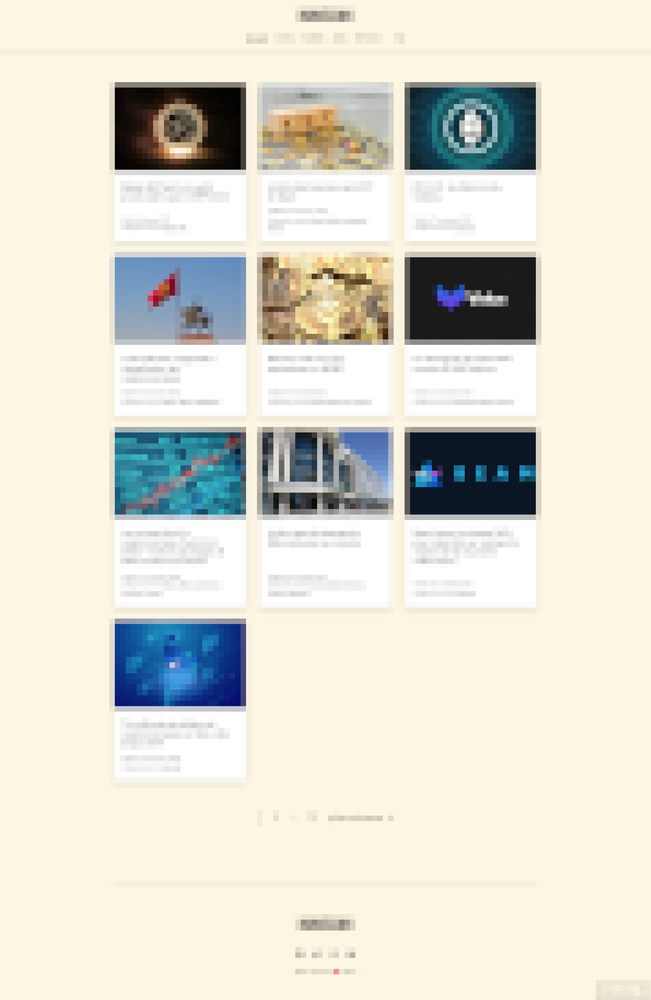

Travaux récents


Je suis un
Je suis Mohammed, web developer de Paris, je suis diplômé d’un M2 en Histoire et civilisations comparées. Je possède une riche expérience dans la conception et la réalisation de sites web et de personnalisation, je suis également bon avec WordPress. La polyvalence et la richesse de mon parcours font de mon profil un atout.
Progression
Développement
WordPress
UI/UX design
Expériences
Programme Digitous un parcours intensif visant à former des développeurs full stack.
Sujet: La révolution fabrique de la démocratie
M2 Histoire et Civilisations comparées.
Acquisition d’une culture historique approfondie et d’un ensemble de compétences en matière d’analyse, de réflexion et de sens critique, applicables aux sociétés du passé comme au monde contemporain.
En collaboration avec les clients, j’ai travaillé à l’élaboration de l’identité visuelle des sites. De plus par la conception de boutique j'ai pu chapeauter la stratégie marketing. Rédactions de plus de 900 articles. Numecoin.fr/ Lightme.fr/ Francoisvigorie.com
Mission: gestion des actions sur le territoire. Mon poste étant centralisateur, je fus force de proposition dans l'amélioration dans l’organisation de l'EDL, mon rôle auprès des différents acteurs étant un atout.
Mission: mandaté par la ville de Paris en tant que responsable de territoire, mise en place du Conseil Citoyen et du budget Participatif
Travaux récents